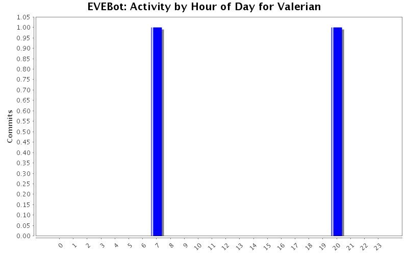
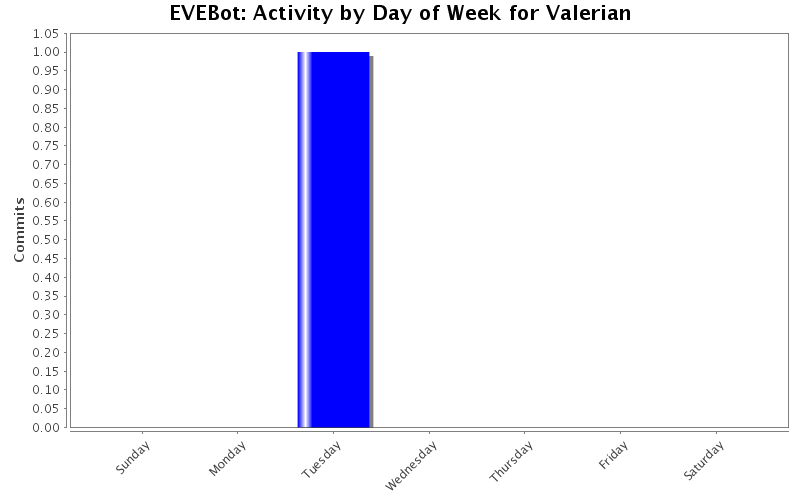
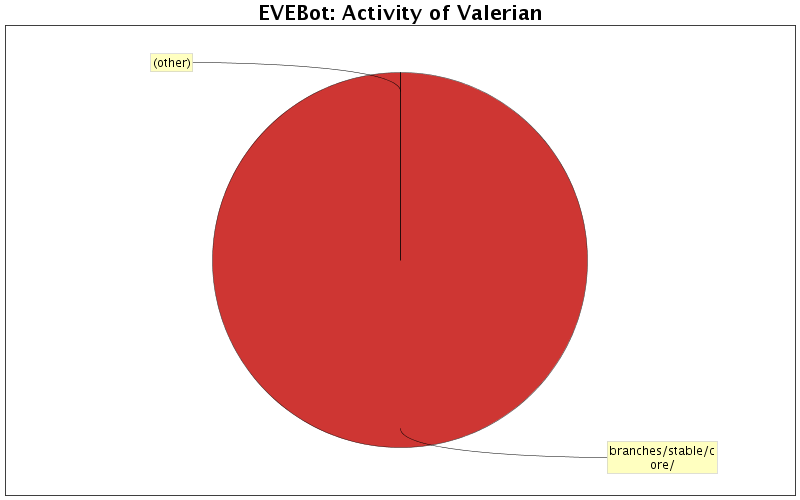

| Directory | Changes | Lines of Code | Lines per Change |
|---|---|---|---|
| Totals | 12 (100.0%) | 571 (100.0%) | 47.5 |
| branches/stable/interface/ | 1 (8.3%) | 481 (84.2%) | 481.0 |
| branches/stable/Behaviors/ | 2 (16.7%) | 38 (6.7%) | 19.0 |
| Install/EVEBot/Branches/Stable_Beta/Behaviors/ | 2 (16.7%) | 38 (6.7%) | 19.0 |
| branches/stable/core/ | 3 (25.0%) | 12 (2.1%) | 4.0 |
| Trunk/EVEbot/interface/ | 1 (8.3%) | 1 (0.2%) | 1.0 |
| Trunk/EVEbot/core/ | 1 (8.3%) | 1 (0.2%) | 1.0 |
| Install/EVEBot/Branches/Stable_Beta/interface/ | 2 (16.7%) | 0 (0.0%) | 0.0 |

Moved Ship.WarpToFleetMember error message to correct block. No more incorrect error spam.
1 lines of code changed in 1 file:
Fixed minimize button texture filename
1 lines of code changed in 1 file:
Corrected typo, PiloteIndex -> PilotIndex
1 lines of code changed in 1 file:
Merge of /branches/stable:1874
2 lines of code changed in 1 file:
ARGH! fixed typo. How did that sneak in?!?
2 lines of code changed in 1 file:
Merge of /branches/stable:1872
36 lines of code changed in 1 file:
Added support for tractoring out of range cans.
36 lines of code changed in 1 file:
Merge of /branches/stable:1861
0 lines of code changed in 2 files:
Formatting corrections only. Corrected tag open/close cases, due to Visual Studio showing them as errors. Reformatted, retabified.
481 lines of code changed in 1 file:
Reverted Ship:Reload_Weapons code to fix forced reloads.
2 lines of code changed in 1 file:
Added workaround to deal with reloading weapons random crash when attempting to reactivate a reloading weapon.
9 lines of code changed in 1 file: